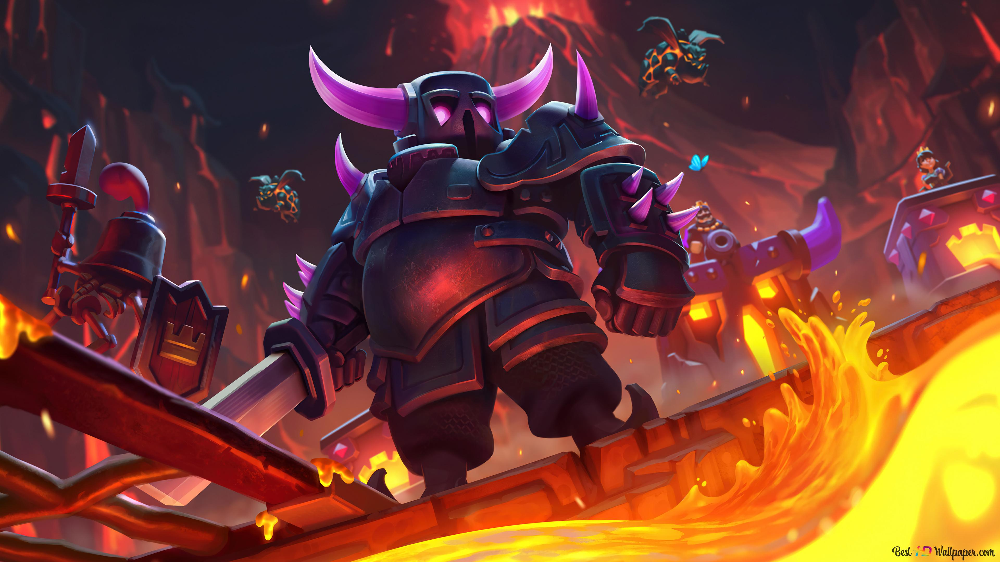

Les Coffres : Il existe plusieurs types de coffres dans Clash Royale : les coffres en argent, en or, le méga-coffre foudre, le coffre épique ainsi que le méga-coffre légendaire du roi. Les coffres contiennent des cartes, de l'or et des gemmes. Chaque coffre a un temps d'ouverture variable, allant de quelques minutes à plusieurs heures.
Les Cubes Mystères : Les cubes mystères se débloquent en réalisant des victoires quotidiennes ou via le Pass de Combat. Plus le cube possède d'étoiles, plus la récompense obtenue sera importante. Ils peuvent contenir des cartes rares, des gemmes ou de l'or.
Les Cages d'Or : Les cages d'or sont disponibles lors des tournois ou dans le Pass Royale. Plus la cage est remplie, plus la quantité d'or récoltée sera élevée.
Le Pass Royale : Le Pass Royale est un abonnement saisonnier payant qui permet d'accéder à des récompenses exclusives tout au long de la saison, comme des coffres supplémentaires, des émotes, des tours personnalisées et bien plus encore.
Les Gemmes : Les gemmes sont la monnaie premium du jeu. Elles permettent notamment d'ouvrir des coffres instantanément, d'acheter des offres spéciales ou de participer à certains tournois.
Les Tournois : Participer à des tournois permet de remporter des ressources exclusives comme des cartes, de l'or et des jetons de tournoi, utilisables pour débloquer des récompenses supplémentaires.
Les guerres de clan : Les guerres de clan constituent également une source de récompenses non négligeable. En participant activement aux combats de clan, les joueurs peuvent remporter des coffres et des ressources supplémentaires selon leur classement. (Voir page Clans)